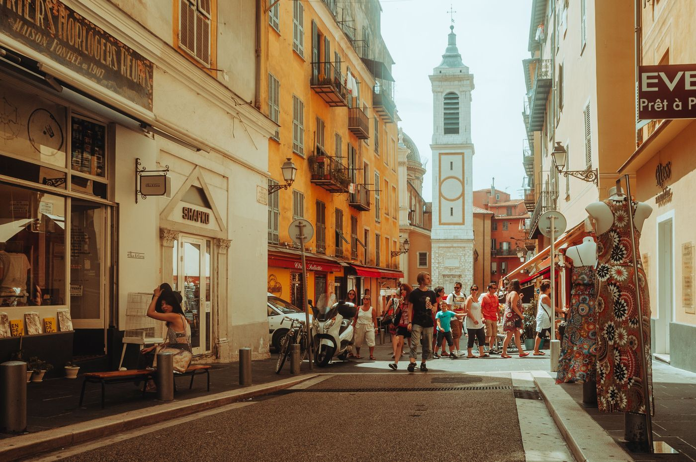

French Riviera, France
Nice
Where the sea meets romance.
Explore iconic sights, craft your dream itinerary, and discover travel plans from fellow wanderers. Built for those who cherish savoring the moment.
- Location
- Mediterranean Coast, France
- Nickname
- Nice la Belle
- Beaches
- Pebbles, Baie des Anges
- Transport
- Lignes d'Azur tram & bus
About Nice
Nice is a vibrant coastal gem nestled along the French Riviera (Côte d'Azur) in southeastern France. Its famed shoreline curves along the turquoise waters of the Baie des Anges, crowned by the legendary palm-lined Promenade des Anglais.
The historic quarter, Vieux Nice, is a picturesque labyrinth of narrow cobblestone alleyways, pastel-colored facades, lively street markets, and ornate baroque churches. Nice only became part of France in 1860, which gives its architecture, culinary heritage, and relaxed lifestyle a delightful blend of French elegance and Italian warmth.
It is the quintessential destination for slow travel: strolling picturesque streets, indulging in artisanal gelato, savoring local socca, and soaking in the Mediterranean sun without any rush.

Popular Places
View all placesFeatured Itineraries
View allMost loved travel guides and plans. Save, copy, or adapt them to match your journey.
Plan your escape to Nice
Handpick your favorite destinations from Explore, organize them day by day, and share your plan to inspire fellow travelers.
Start Crafting Itinerary